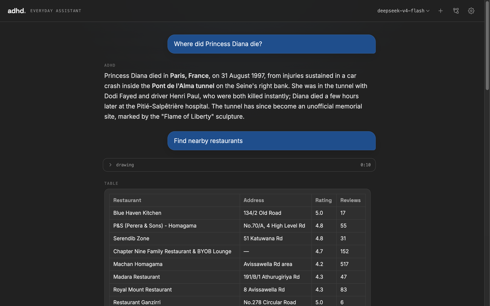

{kind=link}
01 / MEMORY
Memory that lasts.
Save preferences, facts, and working context locally so the assistant remembers what matters across conversations and restarts.
Local-first · built with the DeepSeek API
adhd reads and writes files, runs shell commands, searches and browses the web, remembers things about you across sessions, schedules tasks, and automates anything you do repeatedly — all from one local process. No database, no cloud middleman, just the model API you point it at.
One local process.
Nine practical tools.
Zero cloud middlemen.

01 / How it works
Every message goes to one local process that can call file, shell, browser, and web-search tools mid-reply — not just answer from what the model already knows. It keeps a memory of facts about you, runs scheduled tasks while it's open, and lets you wire multi-step work into a visual Flow you can re-run later.
01 / MEMORY
Save preferences, facts, and working context locally so the assistant remembers what matters across conversations and restarts.
02 / AGENTIC AUTOMATION
Breaks a request into steps, chooses the right tools, tracks progress, and completes multi-step work with approval where needed.
03 / VISUAL WORKFLOWS
Build reusable flows from prompts, tools, conditions, branches, and schedules—then inspect every step before running it again.
04 / CONTEXT MANAGEMENT
Monitors the context window, preserves important details, and carries the right information forward without endlessly repeating history.
05 / COMPUTER ACCESS
Reads and writes permitted files, runs shell commands, opens local content, and operates only within the boundaries you configure.
06 / INTERNET ACCESS
Searches, browses, and extracts current information instead of relying only on what the model already knows.
07 / RICH REPRESENTATIONS
Turns results into useful tables, charts, image galleries, maps, diagrams, code, and structured interfaces whenever the information benefits from it.
02 / Built with boundaries
01Permission modesChoose what needs approval before it changes your machine.
02Explicit file rootsOnly share the folders you decide the assistant can access.
03Your model keyCredentials stay local and go only to the provider you choose.
Open source · ready to run